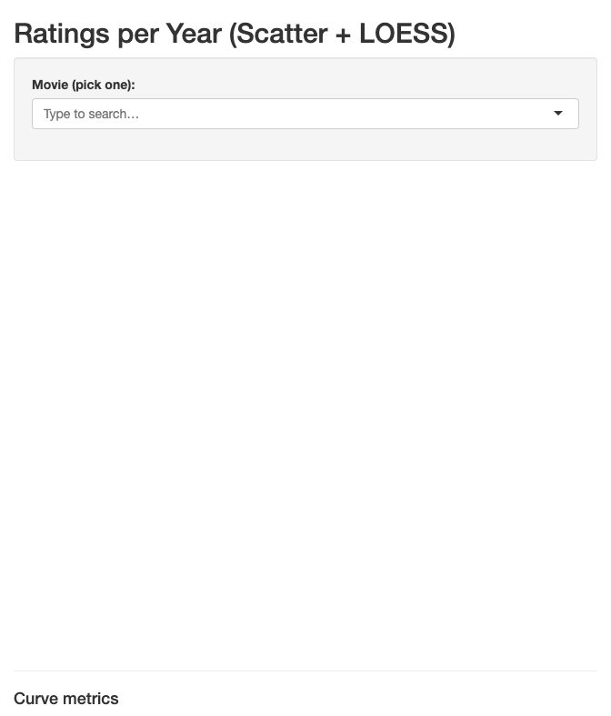

Decoding Cult Classics: What Separates the Films That Stick?
Author
Eric Wentz, Natalia Morales Flores, Sebastian Stefonowicz
Libraries
── Attaching core tidyverse packages ──────────────────────── tidyverse 2.0.0 ──
✔ dplyr 1.1.4 ✔ readr 2.1.5
✔ forcats 1.0.0 ✔ stringr 1.5.1
✔ ggplot2 3.5.1 ✔ tibble 3.2.1
✔ lubridate 1.9.3 ✔ tidyr 1.3.1
✔ purrr 1.0.2
── Conflicts ────────────────────────────────────────── tidyverse_conflicts() ──
✖ dplyr::filter() masks stats::filter()
✖ dplyr::lag() masks stats::lag()
ℹ Use the conflicted package (<http://conflicted.r-lib.org/>) to force all conflicts to become errors
Warning: package 'shiny' was built under R version 4.4.3
Attaching package: 'bslib'
The following object is masked from 'package:utils':
page
In a time when data science is often used to tackle heavy societal issues like healthcare, economics, climate, and inequality, we decided to take a different route. We wanted to remind ourselves that creativity and curiosity also have a place in analytics. We chose movies, a fun and creative domain, and approached them with a serious analytical mindset. Movies are inherently unquantifiable. Their interpretations are subjective, emotionally driven, and culturally dependent. To us, this is exactly what makes the challenge interesting. \ \ The differences in our project were not only in the questions we asked but also in the type of data we worked with. Our datasets involved messy concepts such as cult status, genre identity, and fandom behavior, which are very different from typical structured and numerical data. Our project sits at the intersection of AI, culture, and entertainment analytics. We followed standard data science practices such as data collection, cleaning, and visualization, and combined them with large language model based labeling to analyze a concept that does not naturally exist in structured form.\ \ Cult classics are films with particularly dedicated fanbases and cultural staying power. Throughout the semester, we aimed to determine first, if there are measurable characteristics that distinguish cult classics from other films, and secondly, whether or not we can measure them. This question is significant because existing scholarship on cult cinema largely emphasizes qualitative dimensions such as transgression, niche audiences, and subcultural identity, while offering limited quantitative analysis of film attributes (see Mathijs and Mendik, The Cult Film Reader). Since it did not previously exist, our first step was to create a cult status indicator variable with the assistance of generative AI, that would be the basis for our empirical investigation. The next phase of our project employed traditional data science methods to explore trends in thematic key words, genres, and popularity over time for cult and non-cult films. The last phase, rather ambitiously, implemented statistical machine learning tools to model and attempt to predict future cult status for recent films.\ \ ## Data
We work with two main preexisting data sources: The Movie Database (TMDb) and the Internet Movie Database (IMDb). Our TMDb dataset contains one row per movie for the 10,000 highest rated films by TMDb user score and includes fields such as title, release date, budget, revenue, average vote, etc. We also attach an LLM-generated binary label (cult = 1/0) derived from a prompt-based cult score and a chosen threshold. Cleaning for TMDb focuses on standardizing identifiers and dates, removing duplicates, handling implicit missingness, and normalizing text fields, so titles match consistently across sources.\ \ IMDb provides two types of information that TMDb does not, audience activity over time and credit metadata. For ratings activity, we use an IMDb table for votes over time with fields like ID number, year, number of ratings, and a timestamp for each vote. This data powers our time series curves and the derived cult trajectory metrics. Cleaning on the IMDb side includes filtering to titles that appear in our TMDb list, coercing years to numeric, removing implausible years, aggregating multiple vote records to a single ID and year count when needed, and ensuring consistent ID formats. Finally, we join by matching cleaned titles and release years, then carry the IMDb/TMDb IDs forward so all downstream modeling and visualizations use a single consistent movie identifier.\ \ As touched on in the introduction, there is not an indicator of cult status in any publicly available data. Since our goal was to explore and model characteristics of cult films, we needed a dependent variable. To remedy this we used the OpenAI API to feed chatgpt-4.1-mini the title and release date of all films in our dataset released before 2010 and asked for the structured output of a cult 1/0 indicator variable. To stabilize the variability inherent in generative AI responses, we ran the query five times with the same prompt, and selected films identified as cult classics in at least four out of five queries as what we would consider cult films.
Our main question, “what makes a movie a cult classic?”, ended up being less about a single “secret ingredient” and more about a handful of measurable signals that often come together: what the movie is like, who it seems made for, and how audiences find it over time. Across the results, the strongest pattern is that cult status tends to emerge when a film is distinctive enough to attract a specific audience, and that audience has reasons to keep returning to it and recommending it.\ \ Two descriptive visuals capture the content signature of cult films: the genre-proportion heatmap and the top keywords bar chart. In the heatmap, the cult-column is visibly darker for Horror, Thriller, and Comedy, while the non-cult absence column is dominated by Drama, a more mainstream “default” genre bucket. The very slight presence of Animation, Family, and War among cult classics is also notable, suggesting that in this dataset cult status rarely forms around films that are either aimed at a broader audience or tied to conventional prestige or historical framing. While genre alone does not define cult status, there is certainly correlation. \ \ [insert Eric’s code for visualizations]
The keyword chart shows how cult films differ within or alongside genres. The most common keywords cluster around dark, transgressive, or subcultural themes. Importantly, some keywords aren’t just themes, they are signals of style and structure, like a stinger during or after credits, which point to films that reward insider viewing habits. The broader trend here is that cult classics aren’t just “good movies people like”, but they are often movies with strong identity markers that make it easy for fans to rally around and recommend to other fans.\ \ These visuals also imply why cult status can feel intangible. Our measured features capture what is on screen, but cult status also depends on social transmission, viewing rituals, and timing. \ \ The Shiny app turns “cultness” into a time-shape question by plotting ratings volume by year and extracting four metrics: time to takeoff, peak-lag, long tail ratio, and decay half-life. These are measurable ways to separate at least two subtypes. For slow-burning or rediscovery cults, the movie attracts more sustained attention later than right after release. Even if a film isn’t “cult” in the stereotypical sense, the trajectory illustrates the mechanism. A title can become culturally sticky through discovery years later and ongoing recommendation rather than a launch spike. On the other hand, for mainstream movies with spike patterns, attention concentrates near their release and quickly decays. That shape is consistent with movies that are widely seen when new then fade as the next big release arrives.
# Extracts the release year from a title like "Movie (1999)"release_year_from_title <-function(title_chr) { y <- stringr::str_match(title_chr, ".*\\((\\d{4})\\)")[, 2] y <-suppressWarnings(as.integer(y))if (is.na(y)) NA_integer_else y}# Computes metrics from yearly countscompute_curve_metrics <-function(df_year_counts, rel_year) {if (nrow(df_year_counts) ==0) {return(tibble(metric =character(), value =numeric())) }# Fills yearly gaps to make a complete series yrs <-seq(min(df_year_counts$year), max(df_year_counts$year), by ="year") grid <-tibble(year = yrs) %>%left_join(df_year_counts, by ="year") %>%mutate(n =replace_na(n, 0L))# Numeric time scaled to years tnum <-as.numeric(grid$year) t_year <- (tnum -min(tnum)) / (60*60*24*365.25)# LOESS smooth; fallback to raw counts if it fails lo <-try(loess(n ~ t_year, data = grid, span =0.4, degree =2), silent =TRUE) yhat <-if (inherits(lo, "try-error")) grid$n elsepmax(0, as.numeric(predict(lo, newdata =data.frame(t_year = t_year))))# Release-year baseline obs_years <-as.integer(format(grid$year, "%Y")) rel_year_final <-if (!is.na(rel_year)) rel_year elsemin(obs_years, na.rm =TRUE) yrs_since_release <- obs_years - rel_year_final# Lifetime total on smoothed curve total <-sum(yhat, na.rm =TRUE)if (total <=0) total <-sum(grid$n, na.rm =TRUE)# T50 is the years since the release to accumulate 50% of total activity csum <-cumsum(yhat) T50_idx <-which(csum >=0.5* total)[1] time_to_takeoff_T50 <-if (is.na(T50_idx)) NA_real_else yrs_since_release[T50_idx]# The year of max activity minus release year peak_idx <-if (all(is.na(yhat))) NA_integer_elsewhich.max(yhat) peak_lag_years <-if (is.na(peak_idx)) NA_real_else yrs_since_release[peak_idx]# Long-tail ratio: years 5–15 / years 0–2 sum_window <-function(low, high) { sel <-which(yrs_since_release >= low & yrs_since_release <= high)sum(yhat[sel], na.rm =TRUE) } late_sum <-sum_window(5, 15) early_sum <-sum_window(0, 2) long_tail_ratio <-if (isTRUE(early_sum >0)) late_sum / early_sum elseNA_real_# time from peak until activity <= 50% of peak decay_half_life <-NA_real_if (!is.na(peak_idx) &&length(yhat) > peak_idx) { half_level <-0.5* yhat[peak_idx] post <-seq.int(peak_idx, length(yhat)) below <- post[which(yhat[post] <= half_level)[1]]if (!is.na(below)) { decay_half_life <- yrs_since_release[below] - yrs_since_release[peak_idx] } }tibble(metric =c("time_to_takeoff_T50 (yrs)","peak_lag_years","long_tail_ratio_5_15_over_0_2","decay_half_life_years" ),value =c( time_to_takeoff_T50, peak_lag_years, long_tail_ratio, decay_half_life ) )}ui <-fluidPage(titlePanel("Ratings per Year (Scatter + LOESS)"),sidebarLayout(sidebarPanel(selectizeInput("movie", "Movie (pick one):",choices =NULL, multiple =FALSE,options =list(placeholder ="Type to search…",maxOptions =1000 )) ),mainPanel(plotOutput("plot", height =520), tags$hr(),h4("Curve metrics"),tableOutput("metrics") )))server <-function(input, output, session) { movies <- movies_df %>%transmute(movieId =as.character(movieId),title =as.character(title) ) %>%distinct() %>%arrange(title) ratings <- ratings_df %>%transmute(movieId =as.character(movieId),timestamp =as.numeric(timestamp),timestamp =if_else(timestamp >1e12, timestamp /1000, timestamp),ts =as_datetime(timestamp, tz ="UTC") ) %>%filter(!is.na(ts)) %>%select(movieId, ts)#dropdownobserveEvent(TRUE, {updateSelectizeInput( session, "movie",choices =setNames(movies$movieId, movies$title),server =TRUE ) }, once =TRUE)# counts per year for the selected movie movie_year_counts <-reactive({req(input$movie) ratings %>%filter(movieId == input$movie) %>%count(year =floor_date(ts, "year")) })# release year for the Selected movie selected_release_year <-reactive({req(input$movie) movie_title <- movies %>%filter(movieId == input$movie) %>%pull(title) %>%first() ry <-release_year_from_title(movie_title)if (is.na(ry)) { df <-movie_year_counts()if (nrow(df) ==0) return(NA_integer_)as.integer(format(min(df$year), "%Y")) } else ry }) movie_metrics <-reactive({ df <-movie_year_counts()req(nrow(df) >0)compute_curve_metrics(df %>%arrange(year), rel_year =selected_release_year()) }) output$plot <-renderPlot({ df <-movie_year_counts()req(nrow(df) >0) movie_title <- movies %>%filter(movieId == input$movie) %>%pull(title) %>%unique()ggplot(df, aes(x = year, y = n)) +geom_point(color ="darkred") +geom_smooth(method ="loess", se =FALSE, color ="steelblue", size =1) +labs(x ="Year",y ="Number of ratings",title =paste0("Ratings activity for ", movie_title) ) +scale_x_datetime(date_breaks ="1 year", date_labels ="%Y") +theme_minimal() }) output$metrics <-renderTable({ m <-movie_metrics() m %>%mutate(value =round(as.numeric(value), 2)) }, striped =TRUE, bordered =TRUE, spacing ="s")}shinyApp(ui, server)
Listening on http://127.0.0.1:6256

These two plots scale up the Shiny-app idea from single movies to the whole dataset by summarizing the typical ratings trajectory for cult vs. non-cult films. In the first figure, we align every movie by years since release and convert yearly rating counts into the share of that film’s lifetime ratings, so the comparison is about shape and timing rather than raw popularity. The result is a clear split: non-cult films are more front-loaded, with a sharp spike in the first 1–2 years and then a gradual decline, consistent with mainstream release cycles and early mass attention. Cult classics, in contrast, show a smaller initial spike but relatively higher activity later, especially in the mid-life window (roughly years 5–15) and a subtle late lift, suggesting a longer “afterlife” driven by rediscovery, niche communities, and repeated recommendation rather than a single launch moment.
# Ratings with timestampsratings_clean <- ratings_df %>%transmute(movieId =as.character(movieId),ts_num =suppressWarnings(as.numeric(timestamp)),ts_num =if_else(!is.na(ts_num) & ts_num >1e12, ts_num/1000, ts_num), # ms→sts =as_datetime(ts_num, tz ="UTC") ) %>%filter(!is.na(ts))# Titles, extracts release year and a normalized title keytitles_clean <- movies_df %>%transmute(movieId =as.character(movieId),title_raw =as.character(title),release_year =str_extract(title_raw, "\\d{4}(?=\\)\\s*$)") %>%as.integer(),title_lower =str_to_lower(title_raw),title_no_yr =str_remove(title_lower, "\\s*\\(\\d{4}\\)\\s*$"),title_norm =str_squish(str_replace_all(title_no_yr, "[^a-z0-9]+", " ")) )# Cult labels joined by normalized titleindex_clean <- movies_w_index %>%transmute(title_idx_raw =as.character(title),title_idx_lower =str_to_lower(title_idx_raw),title_idx_no_yr =str_remove(title_idx_lower, "\\s*\\(\\d{4}\\)\\s*$"),title_norm =str_squish(str_replace_all(title_idx_no_yr, "[^a-z0-9]+", " ")),llm_class_final =as.integer(llm_class_final),class =if_else(llm_class_final ==1, "Cult classic", "Non-cult") )# Labeled eventslabeled <- ratings_clean %>%left_join(titles_clean, by ="movieId") %>%left_join(index_clean, by ="title_norm") %>%filter(!is.na(class)) %>%group_by(movieId) %>%mutate(release_year =if_else(is.na(release_year), min(year(ts), na.rm =TRUE), release_year)) %>%#if a title had no year, use first observed rating yearungroup() %>%mutate(rating_year =year(ts),age = rating_year - release_year) %>%filter(!is.na(age), age >=0, age <=20) # cap at 20 years for a clean window
Warning in left_join(., index_clean, by = "title_norm"): Detected an unexpected many-to-many relationship between `x` and `y`.
ℹ Row 35 of `x` matches multiple rows in `y`.
ℹ Row 2665 of `y` matches multiple rows in `x`.
ℹ If a many-to-many relationship is expected, set `relationship =
"many-to-many"` to silence this warning.
# yearly counts per film → sharesage_counts <- labeled %>%count(movieId, class, age, name ="n")film_totals <- age_counts %>%group_by(movieId) %>%summarise(total_n =sum(n), .groups ="drop")age_share <- age_counts %>%left_join(film_totals, by ="movieId") %>%mutate(share = n / total_n)# Average curves across films by classcurve_share <- age_share %>%group_by(class, age) %>%summarise(mean_share =mean(share, na.rm =TRUE), .groups ="drop")# Cumulative version + median T50 per classcurve_cum <- age_share %>%group_by(movieId, class) %>%arrange(age, .by_group =TRUE) %>%mutate(cum_share =cumsum(share)) %>%ungroup() %>%group_by(class, age) %>%summarise(mean_cum_share =mean(cum_share, na.rm =TRUE), .groups ="drop")t50_by_film <- age_share %>%group_by(movieId, class) %>%arrange(age, .by_group =TRUE) %>%mutate(cum_share =cumsum(share)) %>%summarise(T50 = age[which(cum_share >=0.5)[1]], .groups ="drop")t50_median <- t50_by_film %>%group_by(class) %>%summarise(median_T50 =median(T50, na.rm =TRUE), .groups ="drop")
p1 <-ggplot(curve_share, aes(age, mean_share, color = class)) +geom_line(linewidth =1) +#geom_smooth(se = FALSE, method = "loess", span = 0.5, linewidth = 0.8) +labs(title ="Typical ratings pattern by years since release",x ="Years since release", y ="Average share of a film's lifetime ratings",color =NULL) +theme_minimal(base_size =13) +theme(legend.position ="top")print(p1)
The second figure makes that timing difference even easier to interpret by tracking how quickly ratings accumulate over a film’s life. The dashed vertical lines mark T50, the time it takes the average film to reach 50% of its lifetime ratings. Here, the non-cult curve reaches the halfway point earlier, while the cult curve hits T50 later, meaning cult attention builds more gradually over time. Together, these visuals reinforce the central pattern behind our curve metrics: cult classics are less dominated by early release period attention and more defined by a long tail / slow-burn accumulation, which matches what the Shiny app shows at the individual movie level, just averaged across thousands of titles. Because everything is expressed in shares and within a capped 0–20 year window, the takeaway is explicitly about relative timing, not absolute “how popular” a movie is.